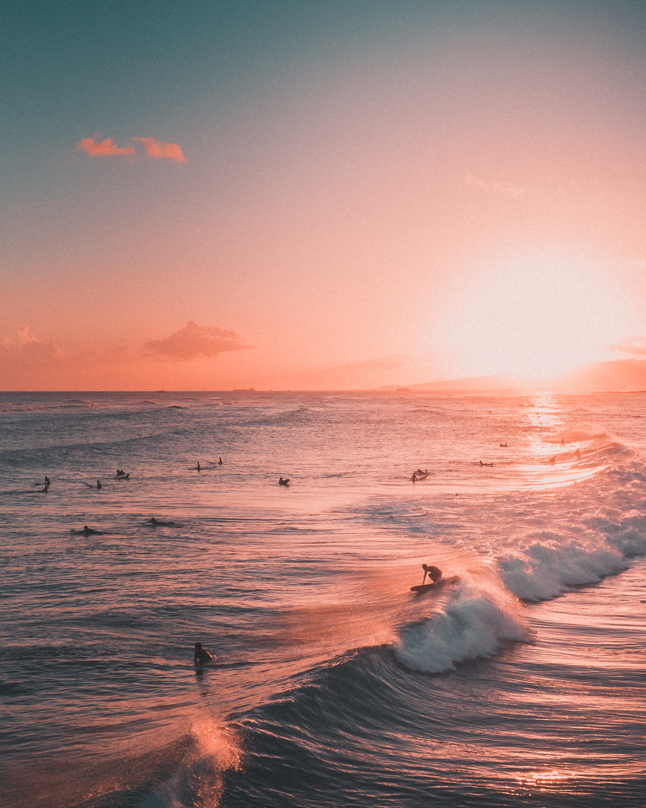
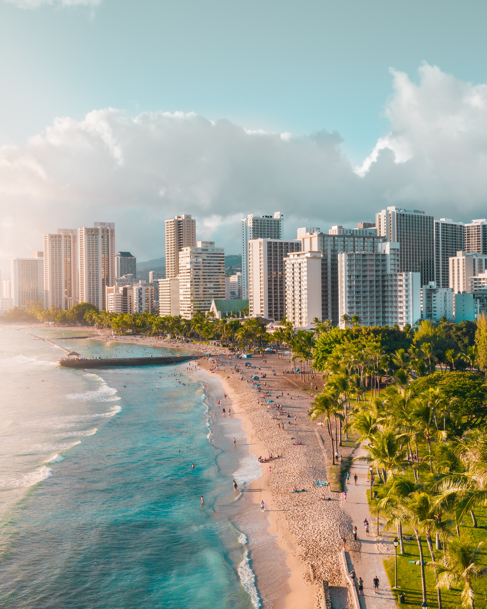

About Oahu
Oahu is the third-largest island in Hawaii and is home to the state's capital, Honolulu. Oahu is known for its iconic Waikiki Beach, historic Pearl Harbor, and vibrant nightlife.
Places to Visit in Oahu
- Waikiki Beach
- A world-famous beach with crystal-clear waters and soft white sand.
- Pearl Harbor
- A historic site that was attacked by Japan in 1941, leading to the United States' entry into World War II.
- Diamond Head
- A volcanic crater that offers stunning views of the surrounding area.
- Skydive at Oahu
- Skydiving in Oahu is one of the premier spots in the world to skydive! The views combined with the adrenaline makes for a thrilling adventure.
Photos of Oahu


Photo credit: Jess Loiterton at Pexels